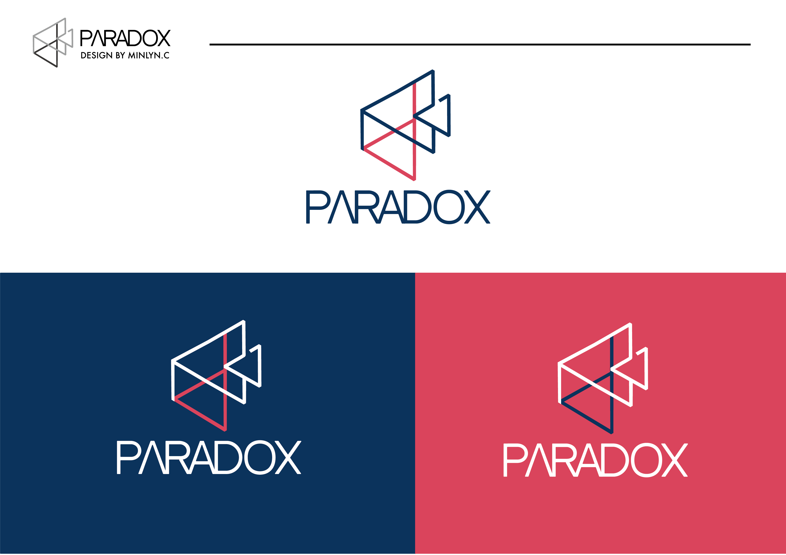
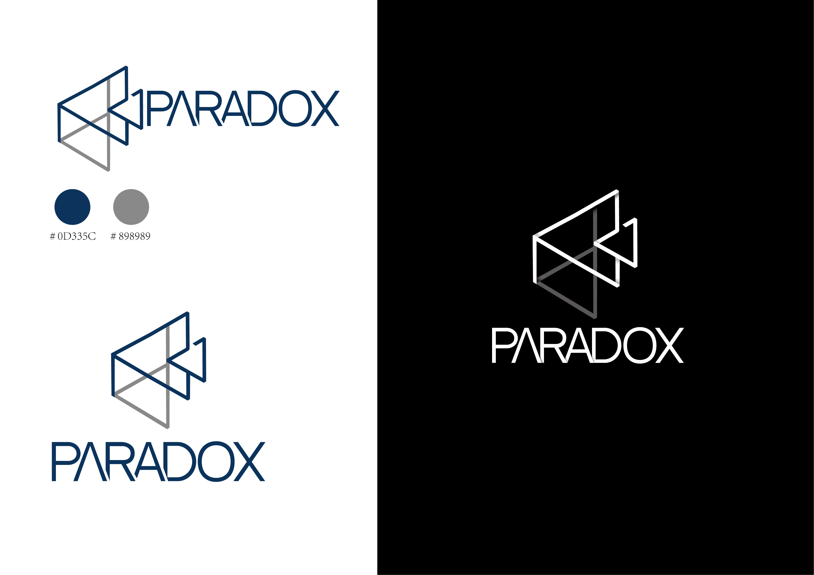
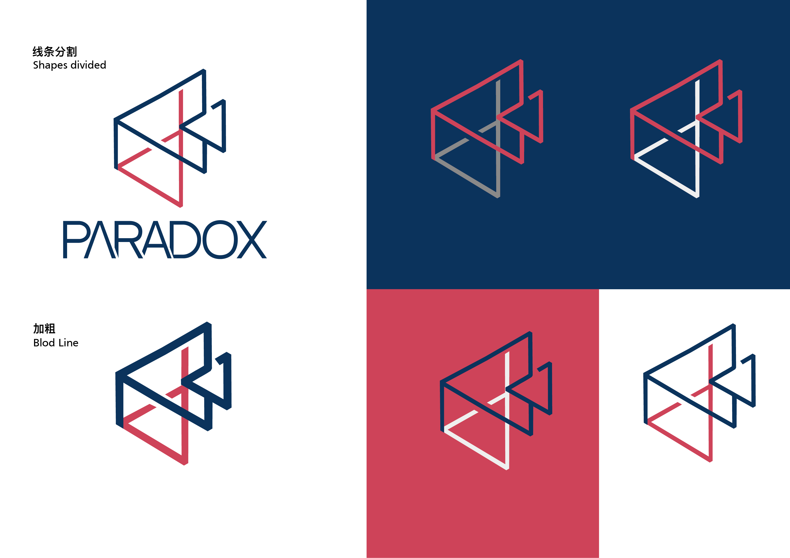
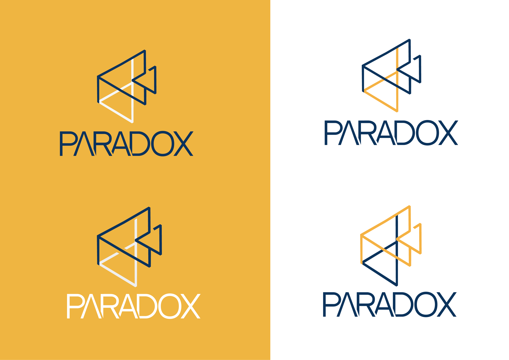

The logo “Paradox” is inspired by film cameras. Also, the logo combined the abstract and reverse letters capital P and lower case d.
The paradox is a logically self-contradictory statement or a statement that runs contrary to one's expectation.
The design concept of the logo "Paradox Film Studio" coincides with the term itself that the ever-changing is consistent.
So, the concept of paradox is strange, irregular but reasonable. Also, the film is an expression of art. Indeed, everyone’s comprehension of movies are various. It is the same as the design thinking of Paradox’s logo
Logo 灵感来自于电影摄影机以及抽象颠倒形式的P与D。 不同具象表现形式，此logo时而像P 时而像小写的d 与大写的D的抽象形态吻合“悖论”的概念。 什么是悖论？ 悖论是一种逻辑上奇怪却又存在即合理，自我矛盾却又彼此相通。这一概念被广泛应用在电影作品里。 同时这也符合 “Paradox”电影工作室的品牌概念即用不同的独特的方式呈现电影且发掘生活中美学。 这样的概念与悖论在电影中不谋而合，电影是一种艺术的表现形式，且每个人对电影的理解也不尽相同。
   